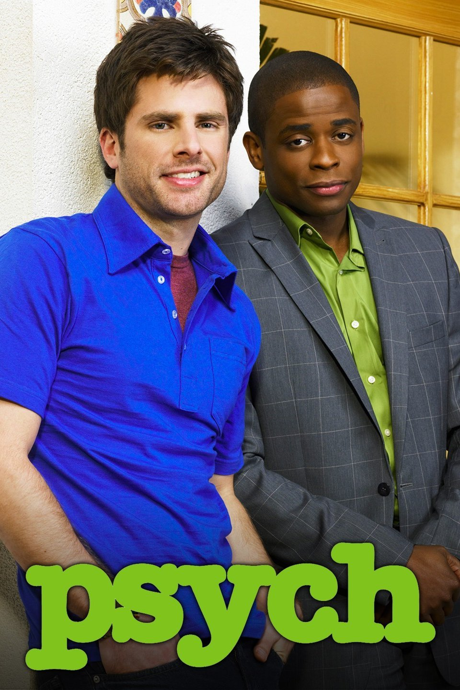

Psych (Aired 2006-2014)
Rating: 8.4/10
Age Restriction: TV-PG
A novice sleuth is hired by the police after he cons them into thinking he has psychic powers which help solve crimes. With the assistance of his reluctant best friend, the duo take on a series of complicated cases.
Creator: Steve Franks
Cast
James Roday as .... Shawn Spencer
Dule Hill as .... Gus Guster
Timothy Omundson as .... Carlton Lassiter
Corbin Bernsen as .... Henry Spencer
Maggie Lawson as .... Juliet O'Hara
Kirsten Nelson as .... Karen Vick
Liam James as .... Young Shawn